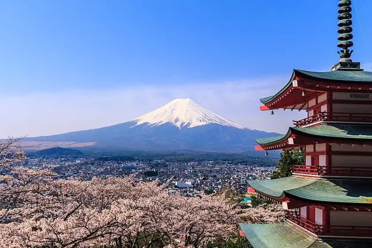
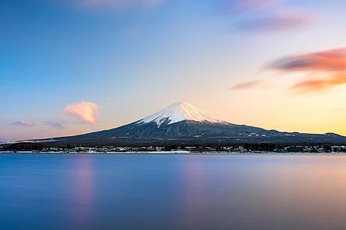

Un símbolo de Japón

El monte Fuji 富士山, también conocido como Fujiyama por un error de transliteración, es el pico más alto de la isla de Honshu y de todo Japón, con 3776 metros de altitud. Se encuentra entre las prefecturas de Shizuoka y Yamanashi en el Japón central y justo al oeste de Tokio, desde donde se puede observar en un día despejado. El Fuji es un estratovolcán y es el símbolo de Japón.
Considerado sagrado desde la Antigüedad, les estaba prohibido a las mujeres llegar a la cima hasta la era Meiji (finales del siglo XIX). Actualmente es un conocido destino turístico, así como un destino popular para practicar el alpinismo. La temporada «oficial» para practicar el alpinismo dura desde principios de julio hasta finales de septiembre. Son mayoría los que escalan por la noche para apreciar la salida del sol. Considerado por muchos expertos de la aviación como el volcán más mortífero de la historia, ya que cada aeronave que transita por su alrededor es destruida a causa de su espiral de turbulencia que genera debido a la aglomeración de nubes que concentra.
El monte Fuji es un atractivo cono volcánico y es un tema recurrente en el arte japonés. El trabajo con mayor renombre es la obra maestra Treinta y seis vistas del monte Fuji del pintor ukiyo-e Katsushika Hokusai. También aparece en la literatura japonesa y es el tema de muchos poemas.
Se clasifica al monte Fuji como un volcán activo, pero con poco riesgo de erupción. La última erupción registrada data de 1707, durante el periodo Edo. Entonces, se formó un nuevo cráter, así como un segundo pico (llamado Hoeizan por el nombre de la era).
